How to read these slides:
- Use arrow keys to navigate.
- Press O for switching to overview mode.
- Press O again to zoom in.
Vibrana
Analyzing Vibration Signals
Julian RakuschekProf. Dr. Tobias Schreck
The Problem
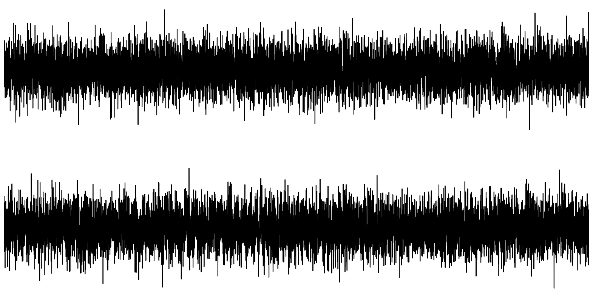
One of them bears a secret
The Problem
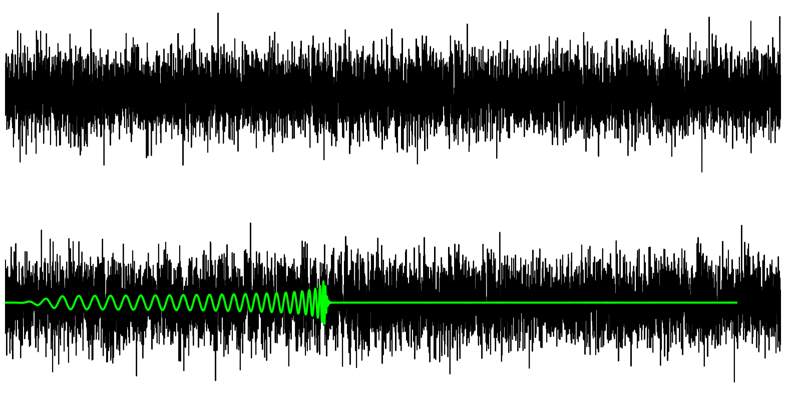
One of them bears a secret
A Gravitational Wave
[Video Source: https://www.youtube.com/watch?v=Y3eR49ogsF0]
Preliminary: Time Delay Embedding
Exposing the Secret
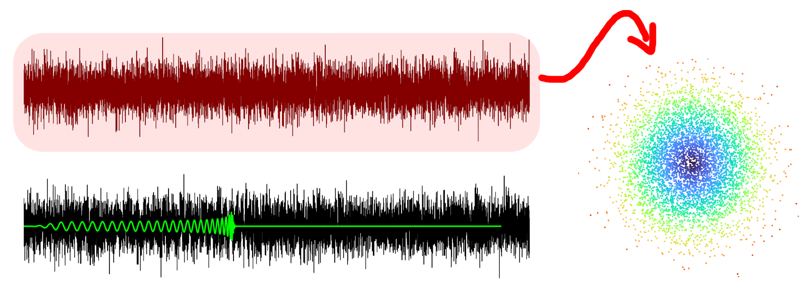
Exposing the Secret
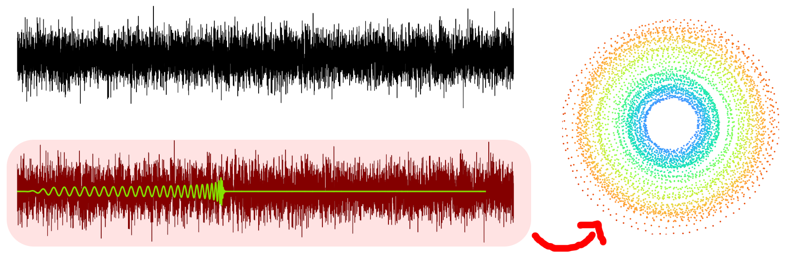
Why vibrations?
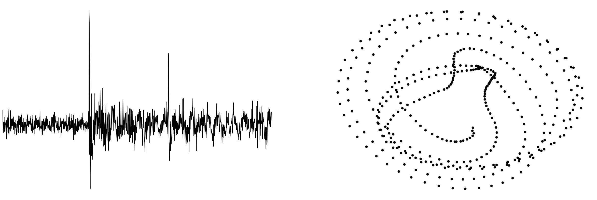
Strong Frequency Components!
Research Question:
Is the projection-based view effective to guide users towards interesting patterns?
Related Work
Vibration Analysis Framework
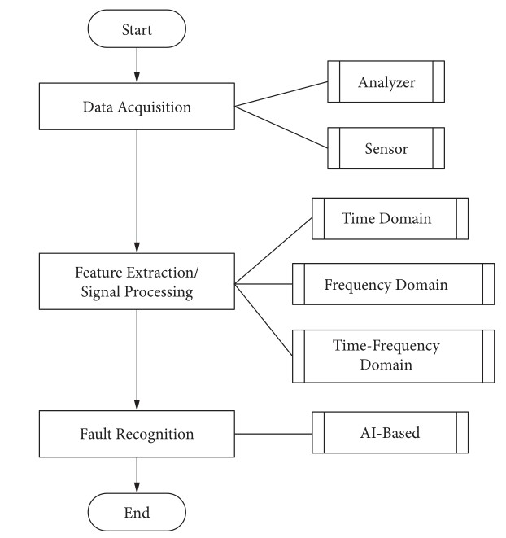
Vibration Analysis for Machine Monitoring and Diagnosis: A
Systematic Review - Ghazali et al. (2021), Shock and Vibration
Using TDA to detect GWs
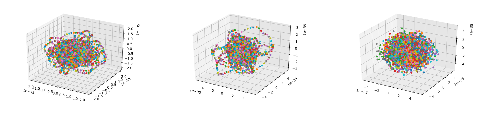
- Embed Signal in lower dimensional space
- Extract features through persistent homology
- Train a CNN
Detection of gravitational waves using topological data analysis and convolutional
neural network: An improved approach - Bresten et al. (2019), arXiv.org
Time Series Paths

TimeSeriesPaths: Projection-Based Explorative Analysis of
Multivariate Time Series Data - Bernard et al. (2012), Journal of WSCG
Exploring Embeddings

Visual Exploration of Relationships and
Structure in Low-Dimensional Embeddings - Eckelt et al. (2023), IEEE Transactions on Visualization and Computer Graphics
Vibrana Showcase
Interaction Design and Workflow
Our Starting Point

Analyzing One Signal
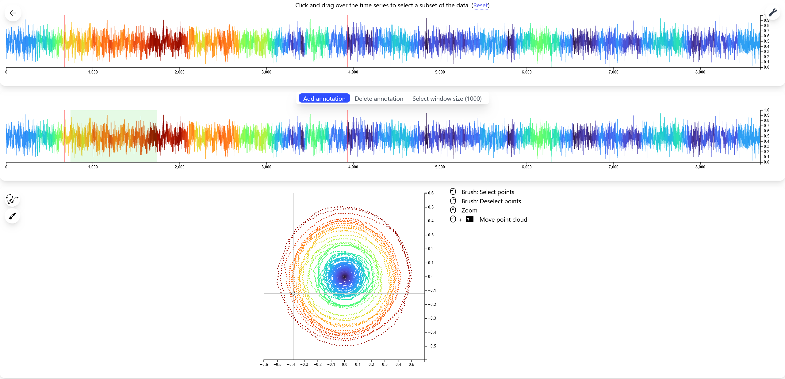
Selecting a Subset
Marking annotations
Explore through 2D Projection
Selecting a Subset
Intermezzo: Advanced Brush
Using the Brush to add Annotations
Using the labels
Perform similaritiy search to find anomalies
How to decide anomaly threshold?
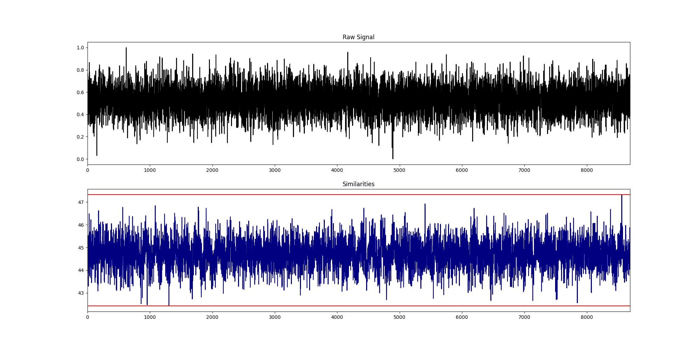
Use an anomaly-free sample as reference
Selecting Anomaly Free
Example for an anomalous sample
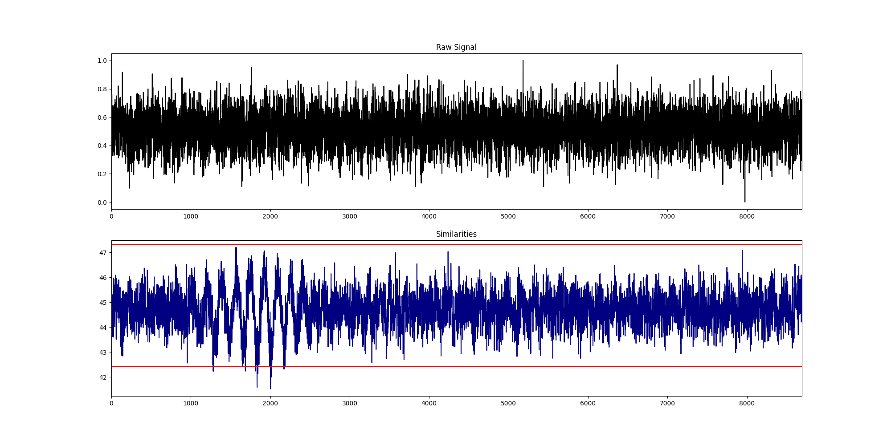
Everything below the lower red line is considered abnormal.
One good label is all you need!

Workflow Summary
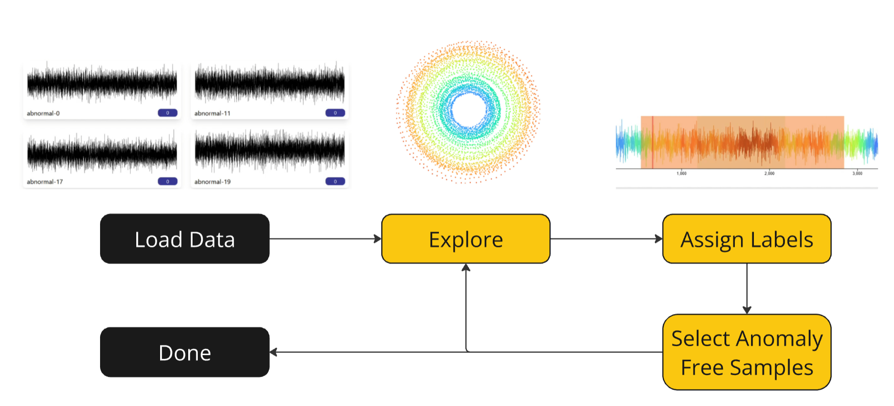
Our Vision
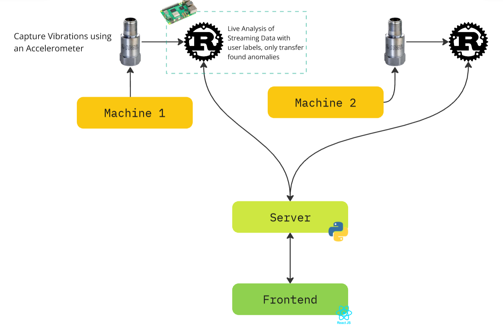
Evaluation - WIP
Partnering up with domain experts
Open Problems
- Performance
- Information Loss when projecting
- Benchmark Datasets
- Evaluation
Conclusion
- Projection-based visualizations help
- Similarity search is often enough
- A little help from the user avoids complicated deep learning
Thank you!
Prof. Dr. Tobias Schreck
tobias.schreck@cgv.tugraz.at
Julian Rakuschek
julian.rakuschek@tugraz.at